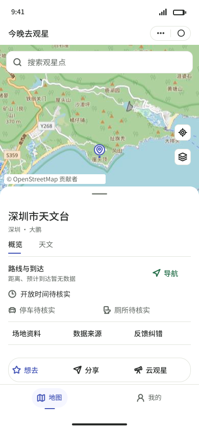

Stitch 两个首稿，与旧候选比较
三个产品画面均按390×844逻辑像素显示，不使用设备外壳。窗口较窄时横向滚动；请勿只缩放其中一张。
旧候选直接复用；Stitch为原始HTML在同一内容视口中渲染，没有修改HTML/CSS。先看整屏，再用一句话说哪个更接近、最主要的问题是什么；也可以都不满意。
旧候选 · 7d0651de
已有修订稿；用户只肯定信息区域局部，未认可整屏。
原图
Stitch A · 悬浮卡片
首个有效初稿，未修改。输入区和地图与面板的分组可比较。服务原始PNG（含右侧空白） · 原始HTML
Stitch B · 连贯底抽屉
首个有效初稿，未修改。行式设施信息与动作层级可比较。服务原始PNG（含右侧空白） · 原始HTML